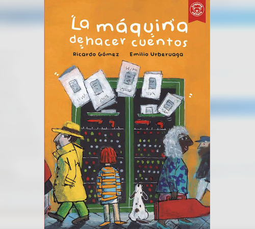
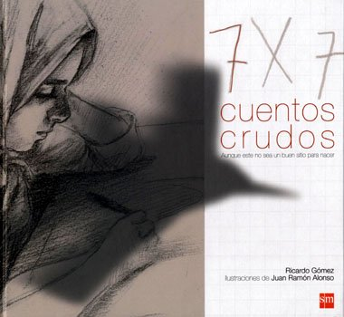
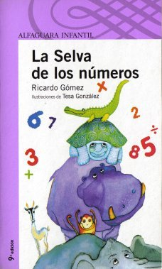
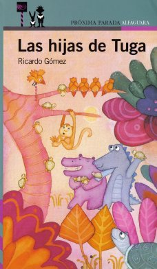
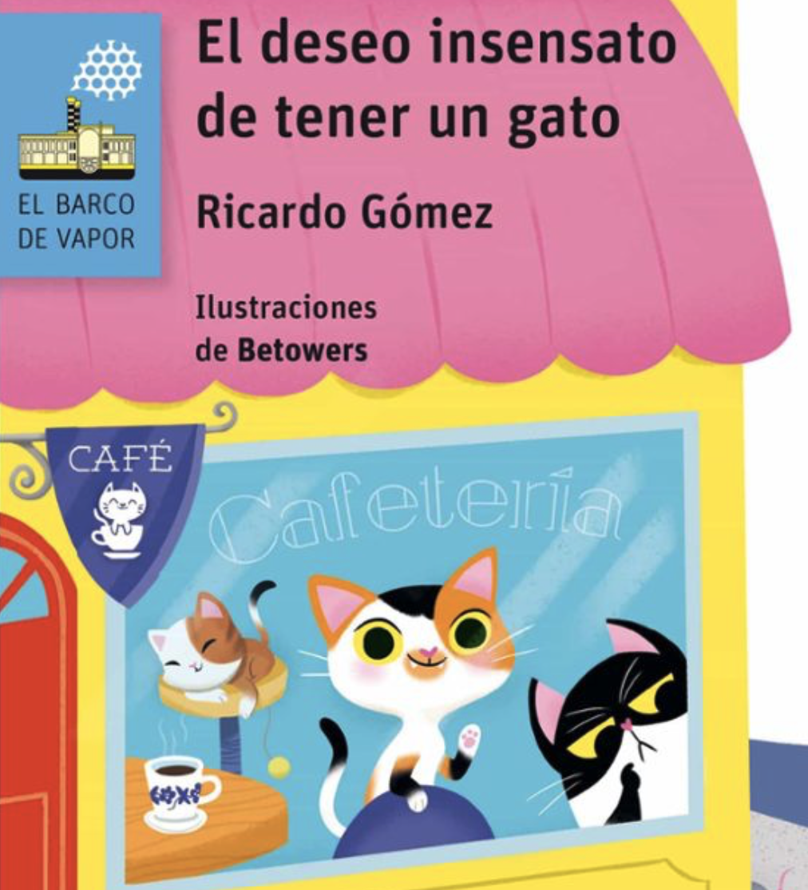
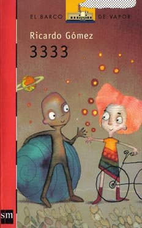

*
Mis Libros
Literatura infantil, juvenil y para adultos
Los Mapas del Agua
Novela juvenil • Editorial Anaya
Las N'Wone, o mujeres-agua son vitales en el desierto. Pero a la última N'Wone le sucede su hija Nanga, que tiene solo ocho años; demasiado joven para ser una mujer-agua. El agua del pozo se está secando y solo Nanga puede encontrar la solución. Emprenderá un viaje con su hermano Rai, poco mayor que ella, con un destino incierto, tratando de salvar al poblado. Con ilustraciones de Laia Pàmpols.

La Máquina de Hacer Cuentos
Narrativa infantil • Editorial Triqueta
A la ciudad ha llegado una máquina capaz de crear cuentos adaptados a los gustos de mayores y pequeños. Pero no todo el mundo parece satisfecho con el invento. Celeste no tarda en anticipar algunos problemas y descubrirá que la máquina esconde una conspiración que amenaza con extenderse por el país y el mundo entero. Una divertida reflexión sobre los riesgos de la Inteligencia Artificial. Con ilustraciones de Emilio Urberuaga.
Ojo de Nube
Novela histórica juvenil • Editorial SM
Esta novela recupera la vida salvaje en la gran pradera norteamericana, antes de la llegada del hombre blanco, a través de una tribu de indios crow. Los nativos ven llegar a hombres barbados, con caballos y armas aterradoras que causan estragos en la población de bisontes y cambian lo que ha sido el mundo de los habitantes de esas tierras. Ojo de Nube, un niño ciego de nacimiento, se convertirá en el miembro más útil de la tribu gracias a sus extraordinarias habilidades. Ilustraciones de Jesús Gabán.

Caballos en la Nieve
Novela juvenil • Editorial SM
La continuación de "Ojo de Nube". Una misteriosa narradora cuenta, muchos años después de que Ojo de Nube y los suyos tuvieran que huir de sus tierras tras de robar caballos de los hombres blancos, a qué dificultades se enfrentaron en territorios agrestes y llenos de peligros. Las mujeres, entre ellas una niña llamada Caballos en la Nieve, toman un papel relevante en la supervivencia de las tribus crow, montando a caballo y luchando al lado de los hombres. Una historia basada en hechos que pudieron ser reales y que trata de recrear la dura existencia de las tribus nativas norteamericanas. Ilustraciones de Jesús Gabán.

El Cazador de Estrellas
Novela juvenil • Editorial SM
Bachir es un adolescente que vive en un campamento de refugiados saharauis. Una dolencia pulmonar le obliga a permanecer en su jaima, sin más contacto que la familia y algunos visitantes ocasionales. Una noche conoce por azar a Hamida, un anciano sabio con quien habla de la historia de su pueblo y del nombre de las estrellas. Tras este encuentro descubre que la verdadera prisión no es su enfermedad sino la desesperanza, y que ambas cosas pueden tener cura. Libro inspirado en personajes reales. Con fotografías del autor.

Cuentos Crudos
Relatos juveniles • Editorial SM
Nueve relatos sobre situaciones duras en diferentes partes del mundo. Sus protagonistas (una niña beirutí, un muchacho saharaui, un joven camboyano, una mujer peruana… incluso personajes anónimos que viven en nuestro mundo cotidiano o que habitaron la sabana africana) se enfrentan a circunstancias difíciles, haciendo lo posible por sobrevivir con dignidad. Historias crudas, pero no faltas de esperanza. Ilustrado por Juan Ramón Alonso.

Diario en un Campo de Barro
Novela juvenil • Editorial Edelvives
Nushi, una adolescente, vuelve a su país en los Balcanes tras haber pasado un año acogida por una familia española. Desde el campo de refugiados escribe un diario con sus vivencias, reflejando sus miedos, esperanzas y deseos de una nueva vida. A pesar del silencio de sus padres y de su hermano, descubre gracias a nuevos amigos lo que fue el horror de la guerra y el destino de otro hermano desaparecido.

Gente Rara
Narrativa juvenil • Editorial Edelvives
En la clase de Patricia todos son un poco raros. Los días transcurren con normalidad hasta que aparece La Escoba, un nuevo profesor que pretende que todos sean estudiantes ejemplares, aunque sea a costa de robarles el alma. Pero Patricia, Laura y algunos compañeros, con ayuda de su auténtica profesora, harán lo imposible por recuperar la normalidad de sus vidas. Ilustraciones de Tesa González.

La Selva de los Números
Narrativa infantil • Editorial Alfaguara
Hace ya mucho tiempo, una sabia y vieja tortuga descubrió algo sorprendente que servía, entre otras cosas, para poner orden en la remota selva en que vivía: los números. Decidida a compartir su sabiduría, fue mostrando su invento a diversos animales, y estos lo utilizaron para los más variados fines. Una historia que combina matemáticas y narrativa de manera amena y divertida. Ilustraciones de Tesa González.

Las Hijas de Tuga
Narrativa infantil • Editorial Alfaguara
Tuga, la famosa tortuga inventora de los números, acaba de tener 52 hijas. Todas han roto el cascarón y han salido a hacer su vida, como debe ser. Todas menos una, ¡que se ha quedado con Tuga y que además es una preguntona! Pero un día la pequeña tortuguita desaparece. La continuación de "La Selva de los Números", donde las matemáticas siguen siendo protagonistas de una aventura divertida y educativa. Ilustraciones de Tesa González.

La Isla de Nuncameolvides
Novela juvenil • Editorial Edelvives
Cuando tenía siete años, Fabio estuvo a punto de morir de unas fiebres. Mientras deliraba repetía que quería ver el mar, algo incomprensible en un pueblo que estaba lo más lejos del mar que podía estar. Fabio sobrevivió, se hizo marinero y capitán, dio varias vueltas al mundo. Una historia de aventuras, amor y mar inspirada en las grandes novelas de Stevenson, Salgari y Melville.

El Sueño de Lu Shzu
Álbum ilustrado • Editorial Edelvives
Bellísimo álbum ilustrado por Tesa González. Un libro que se ve, se toca, se lee y se huele. Tres años de trabajo para crear esta joya. Elegido como mejor álbum ilustrado del año en Brasil.

Tras el Cristal
Relatos • Editorial SM
Once relatos que muestran la vida de personas anónimas como acontecimientos únicos, extraordinarios e irrepetibles. Cualquier situación y cualquier persona adquieren protagonismo cuando se miran tras el cristal de la literatura.

El Dulce Olor del Diablo
Novela para adultos • Editorial Narval
En su decimoquinto cumpleaños, Andrea recibe varios regalos inesperados. Una agresión despierta en ella un sentido dormido: el olfato. Su progresiva percepción de olores le permitirá detectar secretos íntimos. Un thriller psicológico que aborda violencia, género e iniciación sexual.

La Conspiración de los Espejos
Novela para adultos
La resolución del teorema de Fermat lleva de cabeza al catedrático Patricio Virseda. Iniciará una espiral de locura cegado por la ambición. Una novela inteligente sobre incomunicación, mundos paralelos y cómo todo en la vida está encadenado como en una ecuación matemática.

Dios 3.0
Novela para adultos • Editorial Laude
Dios, que ha dejado a la humanidad a su libre albedrío tras la creación del mundo, decide intervenir para intentar combatir la barbarie, la superstición y los falsos dioses. Para ello, reúne en un oasis a cuatro mujeres y a cuatro hombres de distintas culturas, acompañados de otros tantos ángeles. El encargo divino es que elaboren un Libro Sagrado que difunda el Conocimiento y la Razón. Pero la convivencia entre ángeles y humanos dará lugar a situaciones inesperadas.

Música entre las Ramas
Novela juvenil • Editorial Edelvives
Las motosierras de los hombres blancos han llegado a la selva habitada por los bayaka, una tribu acostumbrada a vivir en armonía con la naturaleza. El joven Emeka se pregunta si podrá hacer algo para ahuyentar la amenaza. Un fascinante canto a la naturaleza y a las culturas indígenas que alerta sobre los peligros de alterar el equilibrio de la selva. Ilustrado por Christa Soriano.

Juegos inocentes juegos
Novela juvenil • Editorial Edelvives
Sebastián es un adolescente madrileño conocido como "el Asesino" en el mundo virtual. Su afición por los videojuegos le lleva a probar simuladores de drones. Sin saberlo, lo que pilota son aviones reales que atacan a personas reales en zonas de conflicto. El relato se entrecruza con historias que narran lo que sucede al otro lado de su pantalla, mostrando las devastadoras consecuencias de esos juegos que el chico cree inocentes.

La Pastelería
Álbum ilustrado • Editorial Edelvives
El afamado pastelero Kuchen se instala inesperadamente al final de la calle Strasse. Pronto todos los vecinos, niños y adultos, empiezan a fantasear sobre los maravillosos dulces que elaborará. Pero pasan los días y la pastelería no abre sus puertas. Los estantes siguen vacíos y la gente comienza a murmurar... Un álbum ilustrado por Tesa González con una historia llena de magia y sorpresas.

Tres Historias con Gato
Narrativa infantil • Editorial Edelvives
Claudia y Dani están muy enfadados porque Cepillo, su gato, ha desaparecido. Cuando llegó a su casa, puso patas arriba la vida de la familia. Ahora repasan los momentos felices de su vida en común y se preguntan si se ha perdido o ha sido secuestrado. Pero, en realidad, ninguno sabe la verdad, excepto el propio Cepillo. Tres historias narradas desde diferentes puntos de vista: Claudia, Dani y el propio gato. Ilustrado por Mar Ferrero.

El Deseo Insensato de
Tener un Gato
Narrativa infantil • Editorial SM
El protagonista de nuestra historia es un incomprendido. Es el pequeño de la familia y sueña con hacer cosas que nadie entre los suyos ha hecho, como viajar por el mundo y ser pirata. Además, sus padres no quieren que adopte un gato. ¿Pero qué hay de malo en tener un gato como mascota?, dice. No es un animal peligroso como una serpiente o una tarántula. Es solo un gato... Pero las cosas en realidad no son tan sencillas como parecen.

Los Poemas de la Arena
Novela para adultos • Editorial Algaida
Cuatro soldados comparten guardia en una casamata perdida en medio del desierto. El calor, la arena, el tedio y el miedo marcan sus días. Para sobrevivir al aburrimiento, juegan al ajedrez con piezas talladas artesanalmente, leen poesía árabe y recuerdan su patria lejana. Una historia sobre la guerra, la amistad y el poder de la poesía en las situaciones más extremas.

Como la Piel del Caimán
Novela juvenil • Editorial SM
El protagonista, Rubén, narra en primera persona los sucesos que derivaron en unos hechos dramáticos. Todo comenzó con la llegada a clase de Wilson, un joven inmigrante que sufre el bulling de algunos intolerantes compañeros de clase. Una novela que muestra que no hay violencia pequeña y que la intolerancia y el acoso no son juegos sin consecuencias. Wilson no vive en la selva como vivió su abuelo, pero le acechan los caimanes, gentes que no admiten una razón que no sea la suya porque su piel es dura y correosa.

Uno de Ellos
Novela juvenil • Editorial SM
Una finca heredada. Unos días en familia para descansar. Tranquilidad. Pero ¿quién asegura que al apagar la luz todo va a seguir igual? Comenzaron invadiendo el piso de arriba en silencio. Cuando se dieron cuenta ya era demasiado tarde. Eran muchos, tal vez decenas o cientos. No quedó más remedio que huir con lo imprescindible. Una gran llamarada envolvió la casa. Una inquietante historia de terror psicológico.
Caballos en la Nieve
Novela juvenil • Editorial SM
La continuación de "Ojo de Nube". Una misteriosa narradora cuenta, muchos años después de que Ojo de Nube y los suyos tuvieran que huir de sus tierras tras de robar caballos de los hombres blancos, a qué dificultades se enfrentaron en territorios agrestes y llenos de peligros. Las mujeres, entre ellas una niña llamada Caballos en la Nieve, toman un papel relevante en la supervivencia de las tribus crow, montando a caballo y luchando al lado de los hombres. Una historia basada en hechos que pudieron ser reales y que trata de recrear la dura existencia de las tribus nativas norteamericanas. Ilustraciones de Jesús Gabán.

Un Chico Diferente
Novela juvenil • Editorial Edelvives
Sam tiene la extraña capacidad de ver el mundo a través de las matemáticas, lo que le convierte en un chico diferente. Su habitación es su refugio, aunque convive con el Monstruo Abominable que se esconde en la Zona Oscura. Pasa las horas con su Cajón y Álbum de las Cosas Interesantes, observando el mundo desde su ventana. Un día, una cámara de fotos será el acicate para salir de su habitación y descubrir que en la calle se esconde un mundo lleno de sorpresas y misterios. Ilustrado por Jordi Vila Delclòs. Con fotografías del autor.

3333
Ciencia ficción juvenil • Editorial SM
Vivir en el siglo XXXIV no es muy diferente a hacerlo hoy en día. Sí, puede que existan esferas de desplazamiento instantáneo, calas, holopadres y telegafas, y puede que el mundo esté unido en paz y armonía. Pero, para un chico de 11 años como Mot, la vida puede ser algo muy aburrido y sin aventuras. Todo cambiará cuando, por accidente (e infringiendo alguna que otra ley), Mot viaje hasta un lugar desconocido para él: el siglo XXI. Un juguete literario sobre viajes en el tiempo y la resolución de un problema fascinante: ¿cómo reparar una máquina del tiempo averiada en una época de tecnología antigua? Ilustrado por David Navarro.
3336
Ciencia ficción juvenil • Editorial SM
Mot ha vuelto de su viaje al pasado en 3333. Pensaba que se haría famoso, pero todo el mundo hace como si esa aventura no hubiera sucedido, incluyendo sus padres. Intrigado por esa indiferencia, junto con su amiga Eva, trata de buscar huellas de su aventura, y juntos descubren otro Mundo que está en el suyo, y que a todos les pasa inadvertido. ¿A todos? No. Gracias a nuevos amigos, entrarán en contacto con Eva y Noé. Pero un grave peligro acecha a la gente que le rodea... ¿Lograrán salvarlos? Spes ultima Dea (La Esperanza es la última de las Diosas). Ilustrado por David Navarro.

Los Zorros del Norte
Narrativa infantil • Editorial Edelvives
Ocurrió hace muchos años, en un frío y lejano país del norte. El padre de Katrin era cazador y leñador, pero ella prefería imaginar que era barquero. A Katrin le gustaban los árboles, los animales y las palabras. Un día, vio dos zorros plateados. Le extrañó mucho, pero recordó una leyenda que le contaba su abuela y decidió seguirlos. Una historia mágica sobre la naturaleza, las leyendas y el poder de las palabras. Ilustrado por Ximena Maier.
Las Hijas de Tuga
Narrativa infantil • Editorial Alfaguara
Tuga, la famosa tortuga inventora de los números, acaba de tener 52 hijas. Todas han roto el cascarón y han salido a hacer su vida, como debe ser. Todas menos una, ¡que se ha quedado con Tuga y que además es una preguntona! Pero un día la pequeña tortuguita desaparece. La continuación de "La Selva de los Números", donde las matemáticas siguen siendo protagonistas de una aventura divertida y educativa. Ilustraciones de Tesa González.

El Hermano Secreto de
Caperucita Erre
Novela juvenil • Editorial Edelvives
¿Es Caperucita tan inocente como parece? ¿Su madre desconoce el peligro del bosque? ¿La abuela ha sido realmente devorada? ¿Qué intereses esconden Perrault o los hermanos Grimm? Alex, el hermano de Caperucita Erre, va a tener que enfrentarse a prejuicios y ocultas intenciones si quiere dar respuesta a tan espinosos asuntos. Una revisión inteligente y divertida del cuento clásico desde una perspectiva totalmente nueva. Ilustrado por María Lires.

Zigurat. Dioses, reyes, leyes
Novela juvenil • Editorial SM - Gran Angular
El destino de Namri parece escrito: es el hijo del rey, y su futuro pasa inevitablemente por el trono. Pero Namri está a punto de experimentar las vueltas que da la fortuna. Cuando Hammurabi se hace con el poder y asume el gobierno de toda Babilonia, el destino de Namri cambiará inevitablemente, obligándolo a luchar por la supervivencia. Una apasionante novela histórica ambientada en la antigua Mesopotamia, en los albores de la civilización.
Los viajes de Yuri
Novela juvenil • Editorial [Pendiente]
[Descripción pendiente]

Los Viajes de Ulises
Mitología griega • Editorial Edelvives
Con buen viento, las naves de Ulises habrían tardado solo tres o cuatro días en regresar desde Troya hasta Ítaca, tras la famosa batalla. Sin embargo, el dios Poseidón desvió corrientes y provocó tormentas haciendo que Ulises recorriera islas y puertos por todo el Mediterráneo. Librarse de magas, cíclopes y sirenas, y sortear muchos otros peligros, alargó su viaje de regreso diez largos años. Ilustrado por Mariona Cabassa.

El Minotauro y el Laberinto
Mitología griega • Editorial Edelvives
El dios Poseidón, ofendido con el rey Minos por no ser capaz de reconocer la ayuda que le prestó al vencer a sus enemigos, lo castiga condenando a su esposa a dar a luz a un niño monstruoso con cuerpo de hombre y cabeza de toro. Cuando crece, el Minotauro se vuelve peligroso y es encerrado en un laberinto. Cada año, el rey Minos exige a Grecia un terrible tributo para aplacar la furia de su hijo. Ilustrado por Iratxe López de Munáin.

Los Trabajos de Hércules
Mitología griega • Editorial Edelvives
Hércules es un niño especial que tiene una fuerza prodigiosa. Sin embargo, la diosa Hera está empeñada en hacerle la vida imposible. Para conciliarse con ella, Hércules va a tener que llevar a cabo doce encargos, cada cual más difícil: matar al león de Nemea, limpiar el estiércol de los establos de Augías, vencer a la hidra de Lerna... Las hazañas del héroe más fuerte de la mitología griega. Ilustrado por Anna Mongay.

El Fuego de Prometeo
Mitología griega • Editorial Edelvives
Los dioses encargaron a Prometeo y a su hermano que crearan unos seres parecidos a ellos, aunque mortales. Y ambos, con barro, hicieron cientos de animales. Pero un día, Prometeo modeló un ser diferente, con forma humana. Al verlo tan indefenso ante las inclemencias, decidió robar el fuego de los dioses para entregárselo a los hombres. Zeus, furioso ante la osadía del titán, ideará un terrible castigo. Ilustrado por David Pintor.

Orfeo y Eurídice
Mitología griega • Editorial Edelvives
El canto de Orfeo cautivaba a flores, animales, ninfas o fornidos guerreros. Un día, el joven conoció a la bella Eurídice y se enamoraron. Pero su felicidad no iba a durar mucho, por culpa de los celos de Aristeo y la desafortunada mordedura de una víbora que mató a su amada. Desolado, Orfeo se propone descender al inframundo para recuperar a su amada. Una conmovedora historia de amor y pérdida. Ilustrado por Ana Pez.

El Vuelo de Ícaro
Mitología griega • Editorial Edelvives
Cuando el rey Minos recibe la noticia de que su hijo, el Minotauro, ha sido asesinado por Teseo, y que este ha logrado escapar del laberinto concebido por Dédalo, decide encarcelar al arquitecto y a su hijo, Ícaro, en lo alto de una torre. Dédalo construye unas alas de cera y plumas para escapar volando, pero advierte a Ícaro que no vuele demasiado cerca del sol. Una historia sobre ambición, desobediencia y las consecuencias de no escuchar. Ilustrado por Paloma Corral.

Los Enigmas de la Esfinge
Mitología griega • Editorial Edelvives
La diosa Hera quiere castigar a la ciudad de Tebas por desobedecer sus mandatos, y manda a la terrible Esfinge para que devore a cualquier persona que quiera entrar o salir de allí. El monstruo, no contento con su crueldad, propone a los tebanos un enigma que, si resuelven, les salvará de la muerte. Solo Edipo, un forastero que acaba de llegar, parece tener el ingenio suficiente para vencer a la Esfinge. Ilustrado por Mar Ferrero.

La Sabiduría de Atenea
Mitología griega • Editorial Edelvives
Atenea, diosa de la sabiduría y la estrategia, nació de la cabeza de Zeus completamente armada. Su inteligencia y justicia la convierten en una de las diosas más respetadas del Olimpo. Este libro narra las hazañas y la influencia de Atenea en la mitología griega, desde su nacimiento extraordinario hasta su papel como protectora de héroes y ciudades. Ilustrado por Ayesha L. Rubio.

Las Valientes Amazonas
Mitología griega • Editorial Edelvives
Las amazonas eran un pueblo de mujeres guerreras que vivían sin la compañía de hombres. Hábiles cazadoras y arqueras, su fuerza y valentía eran legendarias. Este libro cuenta las historias de estas intrépidas guerreras, sus batallas contra los más grandes héroes griegos y su sociedad matriarcal única en la mitología antigua. Ilustrado por Rebeca Luciani.

La Terrorífica Medusa
Mitología griega • Editorial Edelvives
Medusa fue una vez una bella joven, pero la ira de Atenea la transformó en un monstruo con serpientes por cabello cuya mirada convertía en piedra a quien la contemplara. Perseo, el valiente héroe, recibe el encargo de traer su cabeza como regalo. La historia de Medusa es una de las más fascinantes y trágicas de la mitología griega. Ilustrado por Dani Torrent.

La Vida es Sueño
Adaptación de Calderón • Editorial SM
Adaptación de la obra maestra de Calderón de la Barca. Mantiene la "voz" de Calderón y el dramatismo de las relaciones entre los personajes, haciendo accesible a lectores jóvenes esta obra fundamental del teatro español. El príncipe Segismundo, encerrado desde su nacimiento por un vaticinio astrológico, se pregunta sobre la libertad, el destino y la naturaleza de la realidad.

Romeo y Julieta
Adaptación de Shakespeare • Editorial SM
La historia de amor más famosa de la literatura universal, adaptada para lectores jóvenes. Romeo y Julieta, dos jóvenes de familias enemigas en la Verona renacentista, se enamoran perdidamente. Su amor imposible y trágico destino han convertido esta obra en el símbolo universal del amor prohibido.

El Abencerraje
Adaptación de novela morisca • Editorial SM
Adaptación de esta joya de la literatura española del siglo XVI. La historia de Abindarráez, un noble moro del linaje de los Abencerrajes, y su amor por la bella Jarifa, en un contexto de enfrentamientos entre moros y cristianos. Una historia sobre el honor, la amistad y la nobleza que trasciende las diferencias religiosas y culturales.

Amadís de Gaula
Adaptación de novela de caballerías • Editorial SM
Adaptación de la más famosa novela de caballerías española. Las aventuras del caballero Amadís, sus hazañas en defensa de los débiles, sus combates contra gigantes y encantadores, y su amor inquebrantable por la princesa Oriana. Una obra fundamental que influyó en toda la literatura de caballerías europea, incluido el Don Quijote de Cervantes.

El Conde Lucanor
Adaptación de Don Juan Manuel • Editorial Edelvives
Adaptación de la obra maestra medieval de Don Juan Manuel. Una colección de cuentos en los que el Conde Lucanor pide consejo a su sabio consejero Patronio sobre diversos problemas. Cada cuento encierra una moraleja sobre la prudencia, la astucia y la sabiduría necesarias para gobernar y vivir. Ilustrado por Javier Zabala.

21 Relatos contra el Acoso Escolar
Obra colectiva • Editorial SM
Veintiún autores se enfrentan sin miedo, y de forma a veces muy poco complaciente, a las múltiples caras de este gravísimo problema que constituye hoy y ahora una terrible forma de tortura para muchos escolares. Veinte escritores de reconocido prestigio y un ilustrador reclaman nuestra mirada hacia este espejo oscuro. Incluye el relato de Ricardo Gómez "No lo entiendo".

8 Maneras de Contar
Obra colectiva
Ocho escritores hablan sobre sus manías, procesos creativos y asuntos relacionados con la escritura. Ricardo Gómez contribuye con "Apocalipsis 2008", donde reflexiona sobre su oficio de escritor y comparte sus experiencias y reflexiones sobre el acto de contar historias.

Atlántico (30 historias de dos mundos)
Obra colectiva
Treinta autores de ambas orillas del Atlántico, quince españoles y quince latinoamericanos, narran historias que conectan dos mundos unidos por el océano. Un proyecto literario que celebra los lazos culturales y humanos entre España y América Latina a través de la palabra escrita.

21 Relatos por la Educación
Obra colectiva
Veintiún escritores reflexionan sobre la educación, su importancia y sus desafíos en el mundo contemporáneo. Historias que ponen en valor el papel fundamental de la enseñanza y el aprendizaje en la formación de las personas y la construcción de una sociedad más justa y libre.
Cuarenta Cuentos a Todo Vapor
Obra colectiva • Editorial SM
Celebración del 40 aniversario del Premio Barco de Vapor con cuarenta cuentos escritos por los ganadores del prestigioso galardón. Una antología que recoge lo mejor de cuatro décadas de literatura infantil y juvenil española, mostrando la evolución y la calidad de este género literario.
Como Tú
Obra colectiva
Una colección de relatos sobre la diversidad, la inclusión y el respeto a las diferencias. Historias que nos recuerdan que todos somos únicos y, al mismo tiempo, compartimos una humanidad común. Un libro que celebra la riqueza de ser diferentes y la importancia de la empatía.
Escritos de Otro Mundo
Obra colectiva
Relatos de ciencia ficción y fantasía escritos por diversos autores españoles. Historias que nos transportan a otros mundos, otras realidades y otros tiempos, explorando los límites de la imaginación y reflexionando sobre nuestro propio mundo desde perspectivas insólitas.
La Calle de las Doce Lunas
Obra colectiva
Doce autores, doce relatos, como las doce lunas del año. Historias variadas que comparten una misma calle imaginaria donde suceden acontecimientos extraordinarios. Un proyecto colectivo que explora diferentes géneros y estilos literarios unidos por un hilo conductor común.
Daños Colaterales (Hazañas antibélicas)
Obra colectiva
Un conjunto de relatos antibélicos que muestran las terribles consecuencias de los conflictos armados en las personas comunes. Historias que denuncian la guerra y sus devastadores efectos, poniendo rostro humano a las estadísticas y recordándonos el verdadero coste de la violencia.
Palabras por la Lectura
Obra colectiva
Diversos autores reflexionan sobre la importancia de la lectura en nuestras vidas. Ensayos, relatos y testimonios que celebran el poder transformador de los libros y defienden el valor de la literatura como herramienta de conocimiento, disfrute y libertad.